I'm technologist who's interested in a variety of things.
I believe that fundamental research progress in science and technology can lead us to a better future when steered correctly.
My overall philosophy for life is to get things done and to keep moving forward.
My strengths lie primarily in mathematics and computer science, but I also like to think about culture, societies, societal change, economics and their intersection with technology.
I recently started my second year as a university student majoring in mathematics.
I also enjoy cycling, writing, reading and making great pizzas.
There is something weirdly technical and mechanical in the process of making pizza dough and the base.
It's like an art and a skill at the same time; it reminds me a lot about how programming should be done.
Here you can find some of my writings, projects and bookshelf.
Me and my friend Tuukka designed and 3d printed canard delta wings for a fixed-wing drone.
We used Fusion 360 for modelling, PrusaSlicer for brim and other parameters, and Prusa XL for printing.
With our specific airfoil and wing design we tried to minimize the weight and surface thickness of the wings while still keeping them as durable/robust as possible.
As a composite material we used PETG because we found out that it gave the best print quality to price ratio by far.
The weight of a single wing was only about 50 grams, the span of one wing is 20 centimeters and the wing root is 29 centimeters.
Here are the real-world and CAD model results:
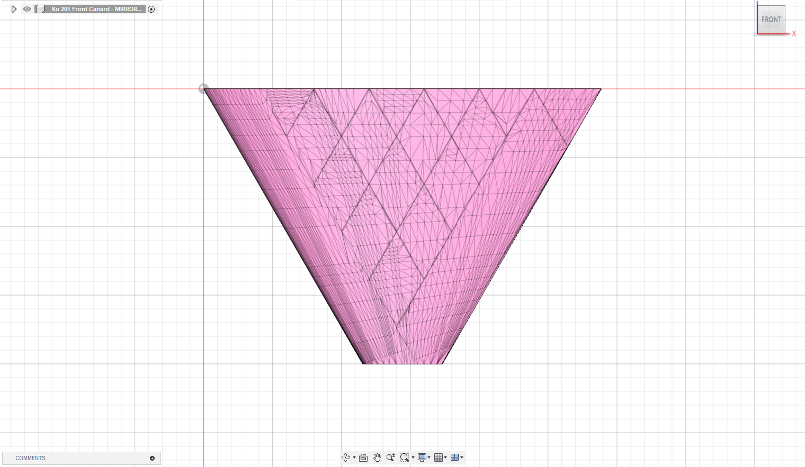
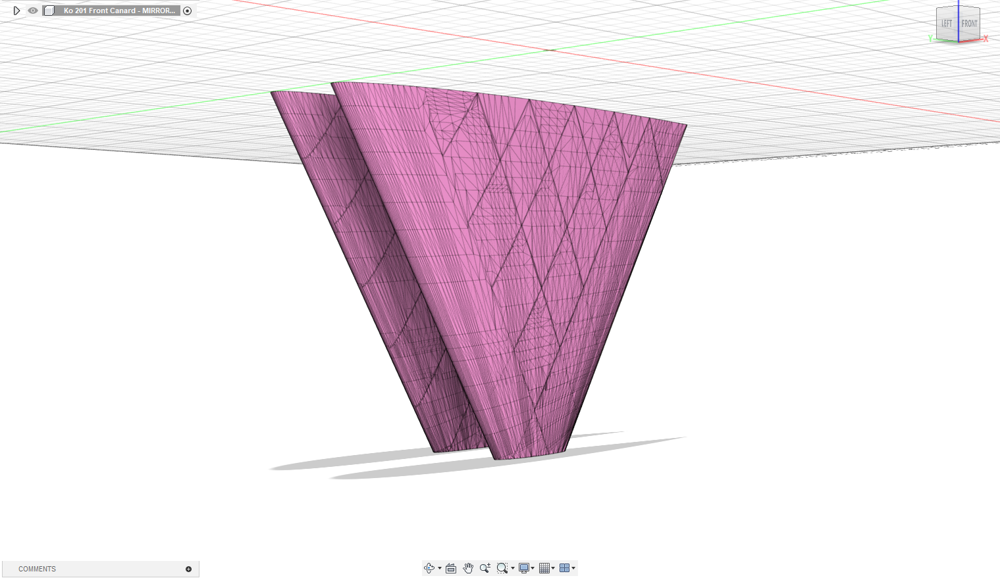
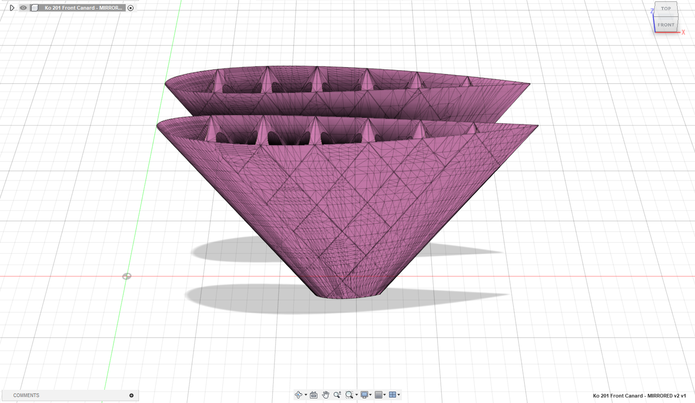
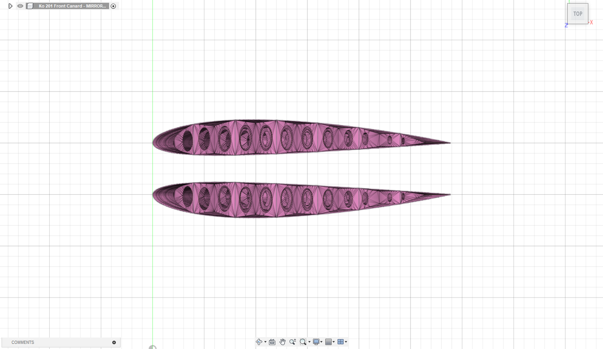
My Experience Learning English as a Second Language
How languages are taught in Finland
My journey with the English language has been mostly fun and stimulating, but it also has had an unpleasant side.
I think that most Finns, who enjoy English, have had somewhat similar experience to mine.
And that is the divide between classroom and outside of the classroom learning.
The cold hard truth is that only around 5 percent of my English ability was learned in the classroom.
The rest was learned outside of it.
For as long as I can remember the English classes were intellectual torment in many ways.
The topics were extremely boring and dry.
The exercises were badly designed.
The vocabularies were badly chosen.
And in high school (during covid) the teachers didn't care much about teaching or the language itself.
Here is approximately how the English experience in a classroom went every time:
We go to class, teacher introduces new chapter on some absurd theme (international airport for example), then she goes through the dry and unoriginal story about the airport (from the book), after which she tells us that our homework for the next time is to learn the airport vocabulary of the chapter and there will be word test on them.
Then at home you're not motivated at all to learn some random words related to a terrible story and trivial/insignificant topic.
But still because the topic vocabulary itself was quite easy you'd score 16/20 on the test.
In reality you knew these 16 words beforehand and close to zero actual learning was done.
This whole process is looped for 9 or 10 years (to the end of high school).
The exceptions (best parts) were the times when we got assigned to read a book, but these were rare and usually the selection was small.
But how did I learn english then?
Basically everything from internet and video games (like most of my peers).
And also later from books and media/news.
I can still remember my younger self hovering through the items in my Runescape inventory and trying to understand what their English written labels meant.
In a way these item names were also arbitrary, but there was a clear distinction, because there was a point in what I was doing.
I was trying to understand the item names, because it was important for my progression in the game; I had to understand the names so that I could understand what the items did to complete my quest.
There was tangible incentive and purpose for learning and that's why the learning didn't feel like a trivial exercise like it felt in the classroom.
I truly think that learning through a meaningful way like this is the best way to do it.
What lacks?
But I guess there are some things that only the classroom could teach me.
I vividly remember two things that were taught to us: 1. never use “And” or “But” as starter for sentence and 2. never ask and answer a question in your text.
Even so, I still like to do both of these things in my writing and will never stop that.
I guess in a way I'm a bad writer of formal/classroom English.
At least if you were to ask that from my old teachers.
All in all: English is an amazingly expressive language, but the way it's taught in the classroom needs a major reform.
My language (learning) philosophy is to have fun while using a language and to not follow every made-up norm to a tee!
What Makes Dialogue With LLM Worth It?
Sunday afternoons
In many sunday afternoons when I'm relaxed and peaceful at home, my thoughts flow freely and I need to validate some of those ideas pushing through.
Maybe the silence and the peacefulness of the afternoon sunbeams shining through my window causes this.
In these moments I've started to notice having conversations with Claude 3.5 when wanting to validate someone of those ideas (and fast).
For those that don't know, Claude is large language model (LLM) developed by Anthropic.
At first (and still) it felt like a slippery slope to do this because current LLMs, like Claude, are far from perfect.
They make mistakes and give shallow answers on a regular basis.
This makes sense since LLMs are the generalization of their underlying distribution (that they have been trained on).
But in the end of the day does any of that even matter?
In some ways those things also apply to humans; as humans also make mistakes and are the generalization of their surrounding environment on which they grew up on.
Positive reinforcement
In my mind the objections against LLMs don't matter as long as the conversations are fruitful and help me to grow and reinforce my ideas.
At first I was sceptical of this, but I've really noticed that some of the conversations I've had have been excellent for exploring my ideas and for improving my thinking on a subject.
Obviously the most important thing in these conversations is that I get feedback for my ideas.
But the quality of the feedback is also important.
The feedback needs to be thought provoking; so that it seeds new subideas from the original idea.
And then you can talk about these new subideas and do the cycle again and again; making it a positive reinforcement loop for new different ideas.
And having those different ideas interconnect to each other and understanding the connections they share.
These are some of the important aspects for fruitful conversations.
But the most important aspect of the feedback is the objectivity.
You want the model to pushback on your ideas and suggestions.
You want the model to be as objective as possible while still positively reinforcing and motivating you to explore more ideas.
This is because nobody wants to have a conversation with a yes-man.
A yes-man never truly engages or provokes you.
A yes-man will only tell you what you want to hear; and that never brings anything new to the table.
So some type of middle ground between reinforcement and pushback would be the perfect feedback to get.
But as I said before, these models aren't perfect so the reality can be quite different at times.
Still these models have came far enough so the utility in some capacity is there.
Pick the right use case
Important part of the skill of using LLMs is to be able to know when they can be useful and when they can't.
So when using LLMs you have to understand the right and wrong use cases for them.
My advice based on anecdotal evidence is this: no domain spesific conversations or questions, because that is often where LLM crumbles the worst.
So for example, trying to discuss math on detailed level is bad idea and probably wastes more of your time then you just reading an actual textbook (textbooks are important!).
More overarching, general and diverse conversations are better suited to be had with an LLM; especially those that contain semantics.
So talk about big picture ideas and concepts!
NOT implementation details or spesifications.
In some ways LLMs are the idea machines of our time.
And our job is to validate which of those ideas are actually good and which can be realistically implemented.
Watch this REALLY GOOD machine learning street talk episode related to this notion:
Deviate From the Mean
Ole positiivinen poikkeama jakaumassa
Liian monelta ihmiseltä jää elämänsä aikana mahdollisuuksia käyttämättä ja tavoitteita saavuttamatta.
Monesti syynä on epävarmuus, joka kumpuaa sosiaalisesta paineesta.
On helppo miettiä liikaa yleistä mielipidettä tai sosiaalisia normeja.
Joukkoon on helppo sopeutua ja virran mukana on rento kulkeutua.
Virran matkassa saattaa kuitenkin jäädä paljon kokematta ja siksi konformisuutta kannattaa välillä välttää, mutta miten?
V: kehittämällä vankka luottamus omaan tekemiseen, jolloin tilanteesta riippumatta ei ala epäröimään päätösten edessä.
Ja uskomalla itseensä ja tietämällä oman toiminnan johtovan tietoisiin tavoitteisiin, vaikka ulkomaailma olisikin epäluuloinen.
Kyseessä on kuitenkin haastava taito, joka vaatii itsenäisen ajattelun ja ymmärtämisen yhdistämistä.
Tämä vaatii paljon harjoittelua; eli pitkäjänteistä jatkuvaa uuden oppimista ja ympäroivän maailman havainnointia.
Virran mukana kulkeutumisessa on piilohinta, jota monesti ei tule ajatelleeksi. Siksi onkin hyvä miettiä mitä riskin ottaminen todella tarkoittaa?
Monesti ajatellaan, että joukkoon sopeutuminen on riskitöntä.
Näin ei kuitenkaan ole, sillä omien tavoitteiden saavuttamisen näkökulmasta joukkoon sopeutumisessa saattaa piileä suuri riski.
Se että valitsee helpon, turvallisen tai yleisen tien elämässä voi olla haitallista, vahingollista tai jopa kuolettavaa joillekin tavoitteille.
Tässä on edelliseen pointtiin liittyvä hyvä pätkä Sam Altmanin blogista:
“In making this decision, you want to take the right kind of risk.
Most people think about risk the wrong way—for example, staying in college seems like a non-risky path.
However, getting nothing done for four of your most productive years is actually pretty risky.
Starting a company that you're in love with is the right kind of risk.
Becoming employee number 50 at a company that still has a good chance of failure is the wrong kind of risk.
If you stay in college, make sure you learn something worthwhile and work on interesting projects—college is probably the best place to meet people to work with.
If you're really worried you'll miss some critical social experience by dropping out of college, you should probably stay.”
Kirjoitukseni yhteenveto on, että luottamus itseensä ja jonkin tason oma maailmankatsomuksellinen määrätietoisuus ovat välttämättömiä tiettyjen tavoitteiden tai kauempien unelmien saavuttamisessa.
Ja on tärkeää muistaa, että unelmat toteutuvat vain harvoin vaikka asennoituminen ja suunnitelmat olisivatkin kunnossa.
Mutta unelmien kanssa edes puolitiehen pääseminen on paljon tyydyttävämpää kuin kokonaan yrittämättä jättäminen.
What It Means to Innovate: Internet Voting and Estonia
How Estonia is leading the digital transformation
Even though Estonia is a small country with only a population of 1.3 million residents and a GDP of $31 Billion (7 times less than the net worth of Elon Musk), it has gained a foothold in the world of technology.
It seems that as a country, Estonia has realized the importance of the digital revolution and infrastructure.
Estonian politicians and leaders are on the map when it comes to decisions regarding the future growth and prosperity of their nation.
They understand that for Estonia to stay relevant in the future, it has to innovate the old.
One of the best examples of this is the Estonian voting system.
Estonia was the first country in the world to use internet/online voting (i-voting) for its elections.
In this post, I will tell you about the innovative thinking and actions happening in Estonia.
Internet voting
In several Estonian elections, it has been possible to vote over the internet since 2005.
In 2009 Estonia held its European Parliament election.
During this election 14.7% of voters gave their vote over the internet.
Exactly 10 years later, in 2019, the same election was held once again, but this time 46.7% of all participants voted over the internet.
That's almost half of the voters.
Comparing 2009 and 2019, we can see a substantial increase in internet voters in a relatively short period of time.
Evidently, many Estonian citizens are in favor of this change.
This comes back to the attitude and mindset of an Estonian: radical change and groundbreaking innovation are welcomed.
Progressive political decision-making has made all of this possible.
Estonian leaders and politicians enabled this innovative leap, rather than just making bothersome bureaucratic rules.
To this day no significant exploit or bug has been suffered during elections.
If a major problem arises in the future it could endanger the elections, and that would be a disaster for democracy.
That's why the security and design of this voting system is so important.
Underlying technology
This voting system uses Estonian public key infrastructure, which enables secure digital authentication and signing by using public/private key pair encryption/decryption (also known as asymmetric cryptography).
The cryptographic verification is used in conjunction with the voter's electronic identity (eID).
The serverside code of this voting system is open source (GitHub).
The votes are counted only after all personal data have been separated from the votes.
Anonymity and trust are the core concepts of modern voting, so it's important that the technology used can fulfill these essentials.
It's possible that blockchain technology can be used in securing votes in the future (although this still is highly debated and controversial topic).
Seattle
Estonia isn't alone.
In February 2020, a district election in the Seattle area became the first for U.S elections to allow each of its 1.2 million eligible voters to cast a ballot through their smartphones.
And 94.3% of the ballots returned were completed electronically.
Compared to the previous election, the overall voter turnout nearly doubled in size for this election.
These are quite promising results.
Benefits outweigh the risks?
Estonia has also received criticism for its innovative nature.
Estonian i-voting has definitely seem successful.
However, security researchers outside of Estonia [1][2] have found out some vulnerabilities in the voting system.
There is also an excellent video by Tom Scott: “Why Electronic Voting Is Still A Bad Idea“.
But Estonian officials think that the benefits of this voting system outweigh the risks involved: “Risks have to be managed well, but again they can be managed,” says Siim Sikkut who is the chief information officer for the government of Estonia.
I-voting is very cost-efficient compared to paper ballot voting because paper ballots require an army of people to count the votes so it's much more time-consuming.
In i-voting there is a lot less personnel and workforce involved and needed.
Meaning not so many salaries and work hours have to be wasted, essentially saving money and time.
According to the Estonian government, internet voting saves over 11 000 working days per election, which otherwise had to have been taken off.
2018 study by Tallinn University of Technology found that i-voting is 50% cheaper than traditional paper voting.
With i-voting Estonian citizens can vote wherever they are, even during work shifts or from overseas.
Citizens who couldn't vote easily before, like terminally ill and physically disabled people, can now vote with ease.
Voters don't have to lose time going to voting locations and waiting in line.
Internet voting makes voting simple, convenient, and fast, meaning that no one has to take time off to vote.
I-voting is especially useful in getting young people more involved in politics. For these reasons, voter turnout hasn't decreased in Estonia, as it has in many other countries during this decade.
Cost of innovation
When creating and developing something new that is considered “world's first”, there are bound to be some problems and risks, but we should learn from encountering them to better our systems.
Sometimes things will go wrong, but those are learning opportunities. Being scared never gets us anywhere.
The point is that we should study our mistakes and to keep improving the system, making it more profound every step of the way.
This is how the best and most innovative technologies are “invented”.
Estonian nomad life
You will have a great stay in Estonia if you are interested in entrepreneurship and/or tech.
Estonia is a remarkably tech-savvy place.
It has a new enthusiastic and growing tech startup scene, especially in Tallinn.
The business and entrepreneurship opportunities are great because Estonian tax rates are low and legislation isn't overly bureaucratic.
Also, Estonia allows an easy nomad lifestyle for foreigners.
Estonian digital nomad visa makes it effortless to work and live there.
Estonia is one of the fastest innovators in Europe [3 - 2019] [4 - 2021] and the Estonian government is a passionate supporter of new tech, innovation, and digitalization [5][6] [7 - 2022].
It's a fit place for the sovereign individual.
Conclusion
In the grand scheme of things, Estonia is currently insignificant country as it doesn't really affect the world economy in a major way.
But I think that larger countries and their leaders should learn from the mindset of Estonia.
There are many hard problems concerning internet voting and implementing it on a larger scale is exceptionally difficult, but
I still think that in 20 years i-voting will be a worldwide phenomenon and Estonia will be seen as the catalyst of this transformation.
Recommendations and anti-recommendations
Fiction
Cat's Cradle - Kurt Vonnegut
Neuromancer - William Gibson
Foundation - Isaac Asimov
When Breath Becomes Air - Paul Kalanithi (skip the Foreword)
The Hitchhiker's Guide to the Galaxy #1-5 - Douglas Adams
1984 - George Orwell
On the Shortness of Life - Seneca
Slaughterhouse-Five - Kurt Vonnegut
Animal Farm - George Orwell
What We Talk About When We Talk About Love - Raymond Carver
Flowers for Algernon - Daniel Keyes
The Three-Body Problem - Liu Cixin
Looking for Alaska - John Green
Foundation and Empire - Isaac Asimov
A Wild Sheep Chase - Haruki Murakami
Sinuhe egyptiläinen - Mika Waltari
Norwegian Wood - Haruki Murakami
The Catcher in the Rye - Salinger
The Stranger - Albert Camus
The Dark Forest - Liu Cixin
Marijan rakkaus - Joel Haahtela
The Metamorphosis of Prime Intellect - Roger Williams
An Abundance of Katherines - John Green
The Fall - Albert Camus
Paper Towns - John Green
Suuri illusioni - Mika Waltari
Nonfiction
Analyysiä reaaliluvuilla - Petteri H, Riku K, Mika K
A Brief History of Time - Stephen Hawking
Deep Work: Rules for Focused Success in a Distracted World - Cal Newport
The Man Who Solved the Market: How Jim Simons Launched the Quant Revolution - Gregory Zuckerman


 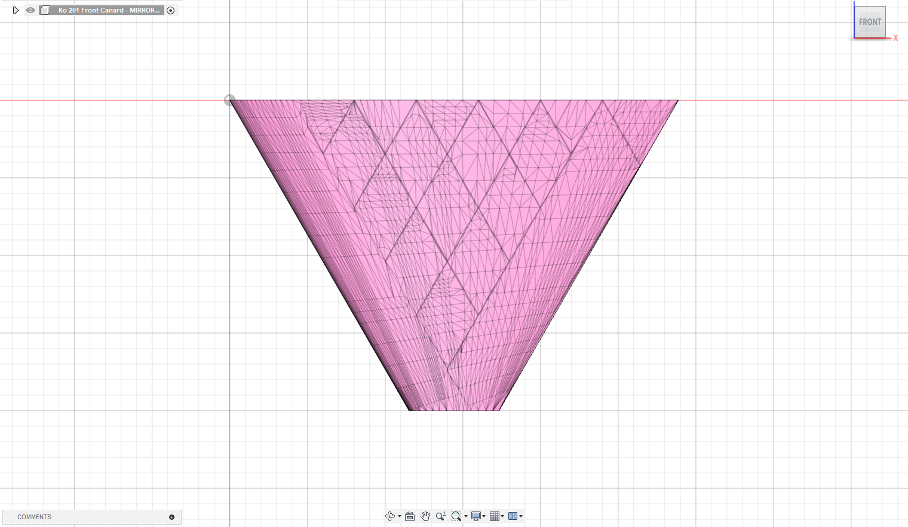
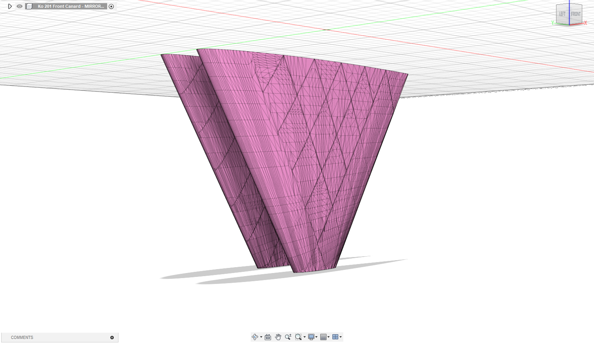
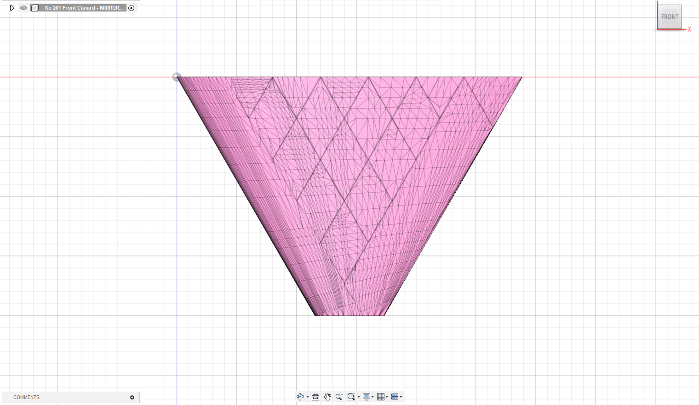
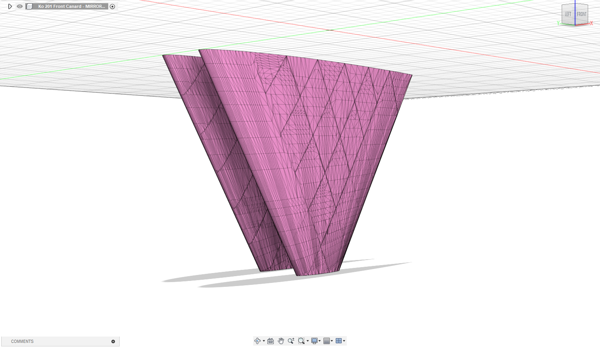
 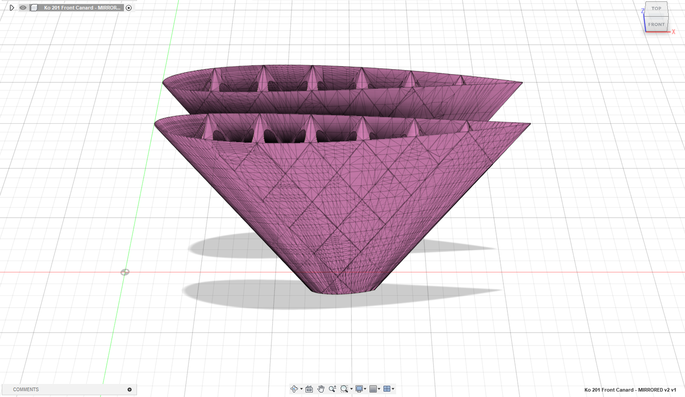
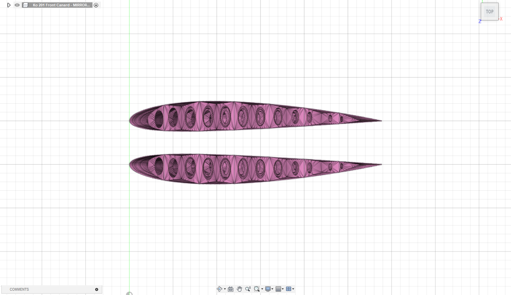
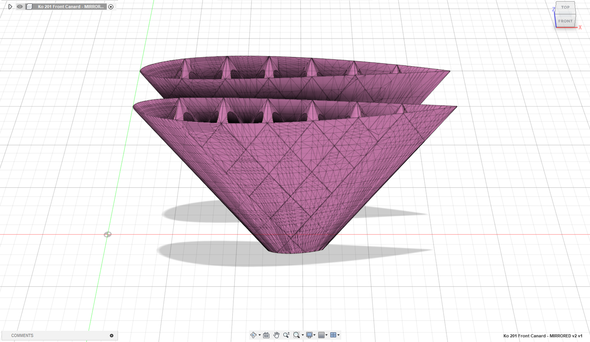
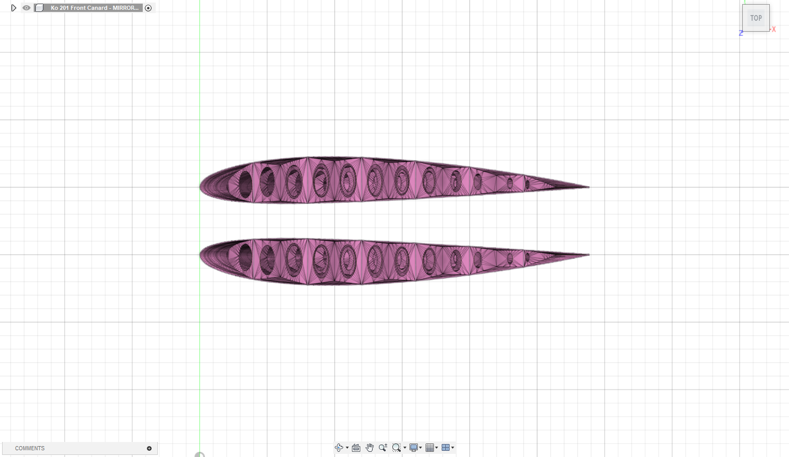